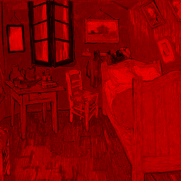

Image numérique⚓︎
1. Tableau de pixels⚓︎
Les caractéristiques d'une image
Une image numérique se présente sous la forme d’un quadrillage - ou d'un tableau - dont chaque case est un pixel d’une couleur donnée. On peut donc repérer chaque pixel par sa ligne et sa colonne dans ce tableau (ou à l'aide de coordonnées en partant du coin en haut à gauche1).

La définition de l’image est le nombre total de pixels qui la composent. Celle-ci n’est pas forcément égale à la définition du capteur.
On l'obtient donc en multipliant sa largeur par sa hauteur. Par exemple, une image de 1920 pixels de largeur sur 1080 pixels de hauteur a une définition de 1920 x 1080 = 2073600 pixels soit à peu près 2 millions de pixels.
La résolution de l’image, c’est-à-dire le nombre de pixels par unité de longueur, détermine sa qualité à l’impression ou sur un écran.
Par exemple, la résolution standard pour affichage sur le web est de 72 ppp (pixels par pouce) alors qu'une résolution de 300 ppp est recommandée pour l'impression.
Le codage des pixels (couleurs)
Chaque pixel correspond à un triplet de trois nombres entiers, soit les valeurs de rouge (Red), de vert (Green) et de bleu (Blue) afin de reconstituer la couleur. Chaque valeur est codée sur un octet, soit entre 0 et 255 (ou en pourcentages, ou en hexadécimal, voir ici). On parle de code RGB (RVB in french).

À noter:
- une couleur dont les 3 composantes sont identiques correspond à un niveau de gris;
- selon les formats, une quatrième composante peut s'ajouter: le canal alpha. Cette valeur (sur un octet également) indique le niveau de transparence du pixel.
Site incontournable
Un site pour visualiser les couleurs au formet RGB, et convertir en héxadécimal : http://www.proftnj.com/RGB3.htm
2. Les modules⚓︎
Pour manipuler les images, nous allons avoir besoin du module imageio. Ce module nécessite d'utiliser également le module numpy pour créer des tableaux d'entiers non signés sur 8 bits (un octet).

imageio
- Ouvrir et charger une image existante (
ada.pngpar exemple) dans une variable (imgpar exemple):
img = imageio.imread("ada.png")
Accès à l'image
L'image doit être dans le dossier courant de travail, a fortiori le même que le fichier .py.
Si ce n'est pas le cas, il faudra le modifier.
- La taille de l'image est accessible dans le triplet (hauteur, largeur, nombre de composantes) donné par:
img.shape
- Lire/modifier un pixel: il s'agit tout simplement de travailler sur le tableau, par indices et par réaffectation.
print(img[2][10]) # pour afficher le pixel ligne 2, colonne 10
img[2][10] = [0, 0, 0] # pour le mettre en noir
- Sauvegarder une image contenue dans une variable
img:
imageio.imsave("monimage.png", img)
numpy
Le module numpy est un module de calcul scientifique orienté vers les matrices, qui sont des objets mathématiques bien pratiques... En gros ce sont des tableaux.
On se servira uniquement de ce module pour créer des tableaux vides, au format que le module imageio exige pour pouvoir ensuite sauvegarder l'image (et donc la visualiser).
On utilise la fonction zeros du module numpy qui prend en paramètres un triplet (hauteur, largeur, nombre de composantes) et le type des valeurs, ici donc des entiers non signés sur 8 bits.
Par exemple pour une image de 100 pixels (de haut) sur 256 pixels (de large), avec 3 composantes (pas de canal alpha):
img_vide = numpy.zeros([100,256,3], dtype=np.uint8)
3. Exercices⚓︎
Exercice 1
- Télécharger l'image
ada.pngci-dessus (simple clic-gauche), puis la charger dans un programme avec le moduleimageio. - Trouver ses dimensions et son nombre de composantes.
- Faire un crime de lèse-majesté et tracer une ligne horizontale rouge au nivau du front.
| üêç Script Python | |
|---|---|
1 2 3 4 5 6 7 8 9 10 11 12 13 14 | |
Exercice 2
Cette image est-elle vraiment composée de pixels tous noirs?

- on parcourt tous les pixels de l'image avec deux boucles
forimbriquées:isur la hauteur (les lignes) etjsur la largeur (les colonnes); - on regarde si le pixel
img[i][j]est noir, c'est-à-dire que ses 3 composantes sont égales à 0; - si c'est le cas, on le remplace par un pixel blanc;
- sinon on ne fait rien: le pixel restera sur une teinte proche du noir.
| üêç Script Python | |
|---|---|
1 2 3 4 5 6 7 8 9 | |
Exercice 3
Incruster John Travolta devant le lycée


- on charge les deux images dans deux variables;
- on parcourt l'image sur fond vert, et si le pixel est vert, on le remplace par le pixel (aux mêmes coordonnées) de l'autre image.
- on peut bien entendu faire le contraire...
| üêç Script Python | |
|---|---|
1 2 3 4 5 6 7 8 9 10 | |

4. Création d'effets⚓︎
Dans cette dernière partie, on va recréer des effets que des logiciels de retouche d'image (GIMP, Photoshop, ...) proposent.
On travaillera (par exemple) sur l'image ci-dessous:

Effets
Pour créer un filtre rouge il suffit de conserver la composante rouge et de remplacer les autres composantes par 0.
Si vous n'aimez pas le rouge, faites un filtre vert. Ou bleu.

Correction
| üêç Script Python | |
|---|---|
1 2 3 4 5 6 7 8 9 | |
Pour obtenir le négatif d'une image, il faut remplacer chaque composante RGB par son complémentaire à 255.
Par exemple, si une composante vaut 42, il faut la remplacer par 213 (= 255 - 42).

Correction
| üêç Script Python | |
|---|---|
1 2 3 4 5 6 7 8 9 10 11 | |
Dans sa norme 709, la Commission Internationale de l’Éclairage propose de remplacer les 3 composantes d'un pixel (r, g, b) par la valeur suivante :
\(m = 0.2126 \times r + 0.7152 \times g + 0.0722 \times b\)

Correction
| üêç Script Python | |
|---|---|
1 2 3 4 5 6 7 8 9 10 11 12 | |
On retourne l'image horizontalement.
Correction
| üêç Script Python | |
|---|---|
1 2 3 4 5 6 7 8 9 10 11 | |
C'est une transformation réversible, puisqu'on envoie un pixel sur quatre dans chaque carré...

Correction
L'idée est d'«envoyer» chaque pixel dans l'un des 4 carrés, en considérant la parité des indices de ligne i et de colonnes j:
- les pixels sur une ligne paire sur les carrés du haut;
- les pixels sur une ligne impaire sur les carrés du bas;
- les pixels sur une colonne paire sur les carrés de gauche;
- les pixels sur une colonne impaire sur les carrés de droite;
| üêç Script Python | |
|---|---|
1 2 3 4 5 6 7 8 9 10 | |
Le principe est, pour chaque pixel, d'appuyer sur la composante majoritaire: on récupère la composante maximale et on l'augmente d'une certaine valeur (par exemple 50 sur l'image ci-dessous) sans dépasser 255 bien entendu.

Correction
Avec une fonction...
| üêç Script Python | |
|---|---|
1 2 3 4 5 6 7 8 9 10 11 12 13 14 15 16 17 18 19 20 21 22 | |
Je vous laisse deviner...

Correction
Le principe est de décider tout d'abord d'une taille de «carrés» qui vont composer l'image pixellisée. Bien entendu, cette taille doit être un diviseur commun de la hauteur et de la largeur de l'image. Ici comme l'image fait 256x256, on peut choisir n'importe quelle puissance de 2. Par exemple, prenons 8 pixels. Il y aura donc 256//8 = 32 carrés en hauteur et en largeur.
Ensuite on va définir la couleur «moyenne» qu'on va mettre dans chaque carré: on fait la moyenne des composantes dans le carré (moyenne des rouges, moyenne des verts et moyenne des bleus).
On affecte enfin cette couleur à chaque pixel du carré.
| üêç Script Python | |
|---|---|
1 2 3 4 5 6 7 8 9 10 11 12 13 14 15 16 17 18 19 20 21 | |
Je vous laisse deviner...

Correction
| üêç Script Python | |
|---|---|
1 2 | |
-
en fait cela dépend de l'outil (module) utilisé pour lire et écrire des images.↩